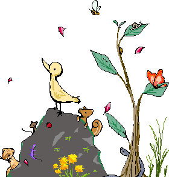
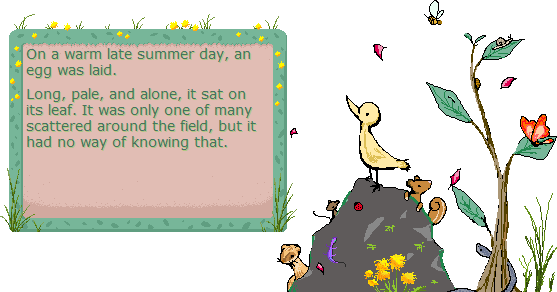
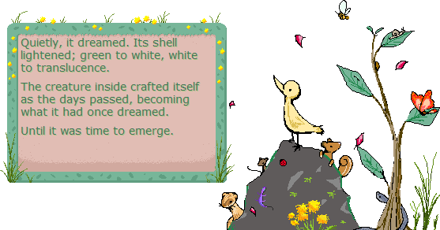

Encore! Onto Another Life

Encore! Onto Another Life tells the story of a small creature's life made as part of ゴーストマスカレード6 (Ghost Masquerade 6). It uses the In the Meadow balloon.
Encore uses the freeshell "field" by maki and has been edited with permission.
Features
- Endearing creatures
- Fleeting lives
- Immersive weather effects
- Needle induced trauma potential
